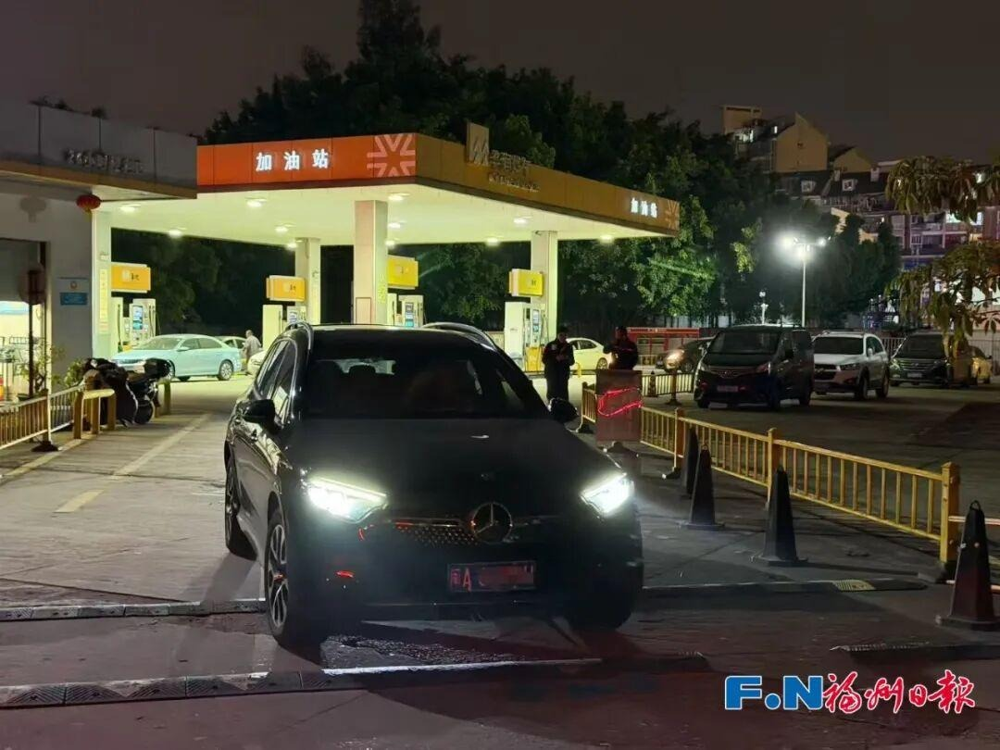
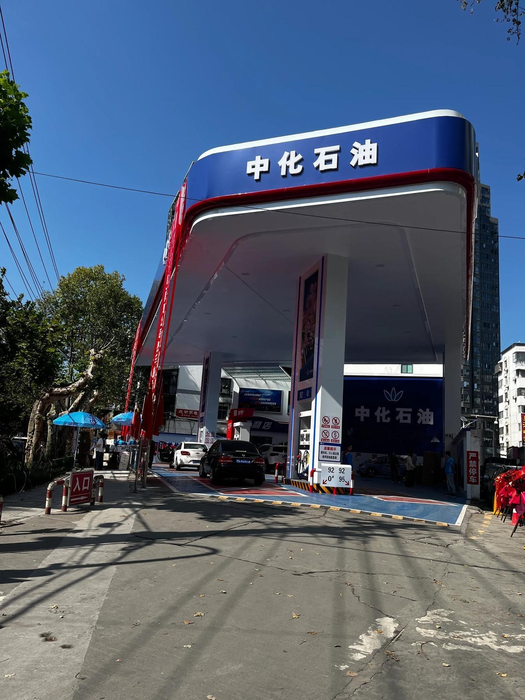
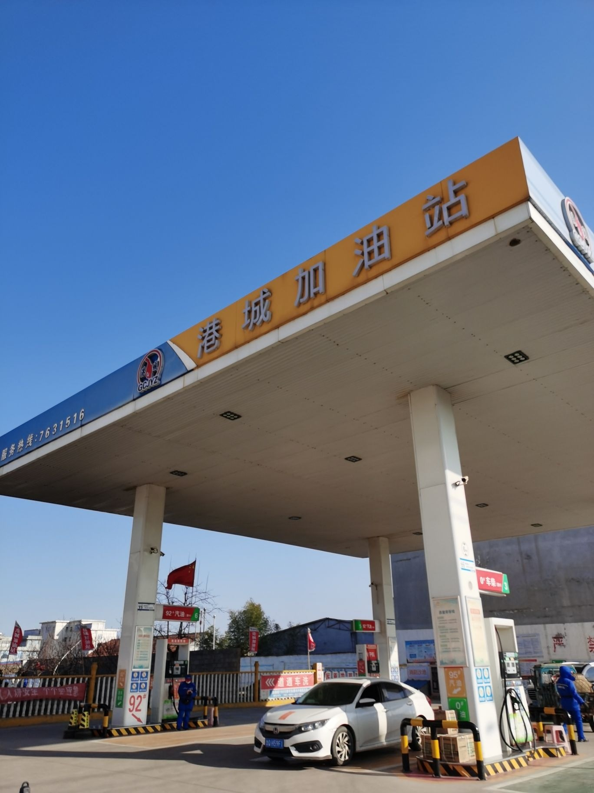
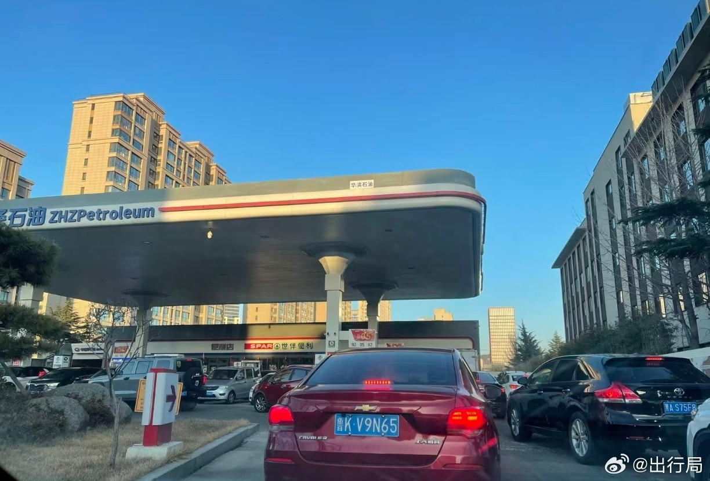

发改委今天公告：自今晚24时起，国内汽、柴油（标准品）价格每吨分别上调345元、335元。按现行价格机制算，本轮汽、柴油每吨应上调440元、420元，国家实施调控，压下来95元、85元，减轻下游用户负担。
本轮计价周期是10月15日24时到10月29日24时。这是今年第21轮调价，前20轮是十三涨五跌二搁浅，今晚是今年第14次上调。上一轮10月15日以搁浅收场，涨势断了一次，今晚接上。

发改委公告只给到吨价，升价各地发改委按最高零售价公布，加油站挂牌价为准。下面这笔账是按吨价折算的估算：汽油345元一吨，92号每升约涨0.26元，50升油箱加满多花约13元；95号每升约涨0.27元，50升多花约14元。柴油335元一吨，每升约涨0.28元。60升油箱加92号多花约16元。
时间点卡清楚：今晚24时前加油按旧价结算，24时后按新价结算。24时是今晚12点，别等到明天白天。油箱见底的，今晚顺路把油补上；油箱还有大半箱的，按正常节奏用，不必专门绕路，更不必卡点排长队。

发改委公告里的原因写得很直白：10月15日调整以来，中东地缘紧张局势升级，国际市场原油价格大幅上涨。机构分析指向两条线：美伊博弈僵持，胡塞武装袭扰沙特，地缘风险短期难以消解，给油价托了底。
数字上：布伦特稳居100美元一桶以上的高区间运行，本轮周期内原油均价约106.35美元一桶，三地原油变化率7.49%。调价前机构预测0.3到0.4元一升，是调控之前的口径，公告折算约0.26元一升，低的那块是调控压下来的。

今晚24时是价格切换点，11月12日24时是下一轮窗口。加油站零售仍实行最高价格管理，企业在不超过最高零售价的前提下自主定价，以你去的那家站牌为准。下一轮看什么：中东局势会不会缓下来，布伦特能不能守住100美元一桶以上，11月12日窗口见分晓。
价格违法可以举报：消费者可通过12315平台举报不执行国家价格政策的行为。加油这件事，今晚顺路办了，别拖到明天。开车的朋友多，转给他们看一眼，今晚24时前这一箱，还能按旧价加。
